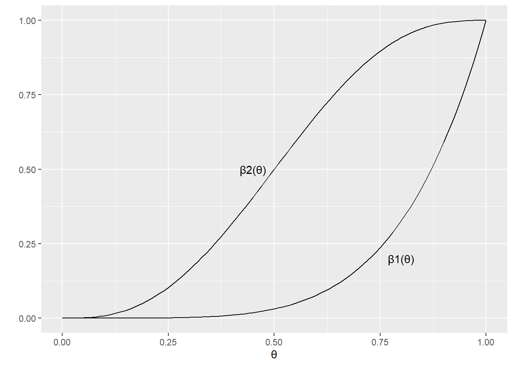

Chapter 8 Hypothesis Testing
8.1 Chapter Notes
This chapter is about performing tests in order to decide between two competing hypotheses, meaning statements about population parameters, given a sample from that population.
We denote the null hypothesis \(H_0\) and the alternate hypothesis \(H_1\). If \(\theta\) is a population parameter, we would have \(H_0: \theta \in \Theta_0\) and \(H_1: \theta \in \Theta_0^c\), where \(\Theta_0\) is some subset of the parameter space and \(\Theta_0^c\) is its complement. Often, for example, the null hypothesis is that some parameter (say the difference between two means) is 0, and the alternate hypothesis is that the parameter is distinct from 0.
A hypothesis test is a rule that specifies which sample values will lead to the rejection of\(H_0\), and which will lead to the acceptance of \(H_0\). Although the chapter does acknowledge that researchers often want to make a distinction between, say, failure to reject the null hypothesis and acceptance of that null hypothesis.
Usually the hypothesis test is specified in terms of a test statistic \(W(X_1, \dots, X_n)\).
Likelihood Ratio Tests
Related to maximum likelihood. The test statistic is:
\[ \lambda(\mathbf x) = \frac{\sup_{\Theta_0}L(\theta | \mathbf x)}{\sup_{\Theta}L(\theta | \mathbf x)} \] So the idea is that we get the ratio of the supremum of the likelihood over the “null” parameter space and the supremum over the entire parameter space.A likelihood ratio test would define a rejection region such that if the statistic is smaller than some \(c \in [0,1]\) then the null is rejected.
The denominator here is the maximum probability of the sample considered over all possible values of \(\theta\), the numerator is the maximum probability of the sample considered over the parameter values in the null hypothesis. Considered this way, the connection to maximum likelihood techniques becomes clear. We have:
\[ \lambda(\mathbf x) = \frac{L(\hat\theta_o | \mathbf x)}{L(\hat\theta | \mathbf x)} \] where \(\hat\theta\) is the maximum likelihood value of the parameter (considered on the entire paramter space), and \(\hat\theta_0\) is the maximum likelihood value considered on the null hypothesis set.
The chapter introduces the Normal likelihood ratio test as an example. Say we have a random sample from a \(\text{Normal}(\theta,1)\) population, and set a point null hypothesis \(H_0: \theta = \theta_0\) for some fixed \(\theta_0\). Since the sample mean \(\overline X\) is the unrestricted MLE, the denominator is \(L(\overline x | \mathbf x)\) and our test statistic is:
\[ \begin{aligned} \lambda(\mathbf{x}) &=\frac{(2 \pi)^{-n / 2} \exp \left[-\sum_{i=1}^{n}\left(x_{i}-\theta_{0}\right)^{2} / 2\right]}{(2 \pi)^{-n / 2} \exp \left[-\sum_{i=1}^{n}\left(x_{i}-\bar{x}\right)^{2} / 2\right]} \\ &=\exp \left[\left(-\sum_{i=1}^{n}\left(x_{i}-\theta_{0}\right)^{2}+\sum_{i=1}^{n}\left(x_{i}-\bar{x}\right)^{2}\right) / 2\right] \end{aligned} \]
The chaoter notes that we can simplify this expression by using the following identity:
\[ \sum_{i=1}^{n}\left(x_{i}-\theta_{0}\right)^{2}=\sum_{i=1}^{n}\left(x_{i}-\bar{x}\right)^{2}+n\left(\bar{x}-\theta_{0}\right)^{2} . \] And so the LRT statistic becomes:
\[ \lambda(\mathbf{x})=\exp \left[-n\left(\bar{x}-\theta_{0}\right)^{2} / 2\right] . \]
Likelihood ratio tests based on a sufficient statistic are equivalent to LRTs on the complete sample, which can simplify calculations.
Bayesian Tests
We make inferences about \(\theta\) based on its posterior distribution. One approach is to decide to accept the null hypothesis if \(P(\theta \in \Theta_0 | \mathbf X) \geq P(\theta \in \Theta_0^c | \mathbf X)\) and reject it otherwise. If the researcher is more concerned about guarding against type 1 error they might decide only to reject the null hypothesis if the posterior probability that \(\theta \in \Theta_0^c\) is greater than some large number, say 0.99.
There’s a section in the chapter about testing more complicated hypotheses that are built from unions or intersections of simpler subsets of the paramter space. E.g. if
\[ H_0: \theta \in \bigcap_{\gamma \in \Gamma} \ \Theta_\gamma. \] May want to revisit.
Error Probabilities and the Power Function
The rest of the chapter is concerned with evaluating candidate hypothesis tests. One approach is to compare the probability of making mistakes.
Type I and type II errors are introduced. Say we have a rejection region \(R\). We have:
\[ P_\theta (\mathbf X \in R)= \begin{cases} \text{probability of a Type I error} && \text{if } \theta \in \Theta_0 \\ \text{one minus the probability of a Type II error} && \text{if } \theta \in \Theta_0^c \\ \end{cases} \]
and so we can define the power function of a hypothesis test with rejection region \(R\) as the function of \(\theta\) defined by \(\beta(\theta) = P_\theta(\mathbf X \in R)\).
The ideal (unrealistic) power function is 0 for all \(\theta \in \Theta_0\) and 1 for all \(\theta \in \Theta_0^c\).
So for example if \(X \sim \text{binomial}(5,\theta)\) and we have \(H_0: \theta \leq \frac{1}{2}\) and \(H_1: \theta > \frac{1}{2}\). If we set up a test to reject the null hypothesis iff all “successes” are observed. The power function of this test would then be:
\[ \beta_1(\theta) = P_\theta (X \in R) = P_\theta(X=5)=\theta^5 \]
Alternatively, we could reject the null hypothesis with 3 or more successes, so:
\[ \beta_2(\theta)= P_\theta(X= 3,4,5) = \binom{5}{3}x^3(1-x)^2 + \binom{5}{4}x^4(1-x)^1 + \binom{5}{5}x^5(1-x)^0 \]
Here’s a plot of the two power functions:

For \(B_1(\theta)\), the probability of type I error is low (the function is small for \(\theta \in \Theta_0\) i.e. below 0.5), but the probability of type II error is high (1 minus the function for \(\theta \in \Theta_0^c\) i.e. above 0.5). The power function \(B_2(\theta)\) trades off some of the type I error control for greater type II error control. The researcher must decide on an acceptable error structure. One approach is to fix type I error at a specified level, and then search for tests that have type II error as small as possible.
The size (\(\alpha\)) of the test is the supremum of the power function, considered over \(\Theta_0\).
A test with power function \(\beta(\theta)\) is unbiased if \(\beta(\theta^\prime) \geq \beta(\theta^{\prime\prime})\) for every \(\theta^\prime \in \Theta_0^c\) and \(\theta^{\prime\prime} \in \Theta_0\). I.e. it’s more likely to reject the null hypothesis if \(\theta\) is in \(\Theta_0^c\) than if \(\theta \in \Theta_0\).
Most Powerful Tests
Definition 8.3.11 Uniformly Most Powerful Test Let \(\mathcal{C}\) be a class of tests for testing \(H_0: \theta \in \Theta_0\) versus \(H_1: \theta \in \Theta_0^c\). A test in class \(\mathcal{C}\), with power function \(\beta(\theta)\), is a uniformly most powerful (UMP) class \(\mathcal{C}\) test if \(\beta(\theta) \geq \beta^\prime(\theta)\) for every \(\theta \in \Theta_0^c\) and every \(\beta^{\prime}(\theta)\) that is a power function of a test in class \(\mathcal{C}\).
Still have more work to do in this chapter. Revisit.